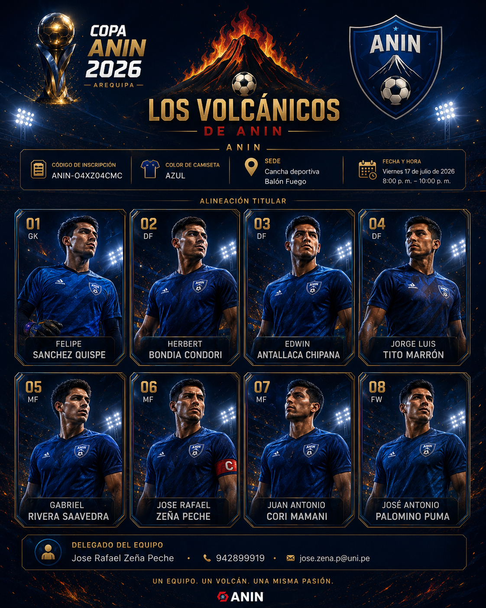

FS
Felipe Sánchez Quispe
El CourtoisAltura, manos firmes y seguridad bajo los tres palos.
Diez jugadores, una misma identidad y un volcán encendido. Los Volcánicos de ANIN combinan experiencia, velocidad, coraje y lectura de juego para disputar cada balón con orgullo institucional.

Cada jugador tiene un rol, una identidad y una historia dentro del equipo.
Altura, manos firmes y seguridad bajo los tres palos.
Disciplina, precisión y recorrido para sostener al equipo.
Anticipo, temple y mando para ordenar la última línea.
Velocidad, ida y vuelta, ambición y profundidad.
Despliegue, jerarquía y llegada desde la segunda línea.
Explosión, confianza y capacidad para decidir el partido.
Coraje, entrega y lucha hasta el último minuto.
Presión, movilidad y oportunismo cerca del área.
Energía, recorrido y conexión permanente con el juego.
Pausa, lectura y pase entre líneas para darle sentido a cada ataque.
Los Volcánicos de ANIN ya están completos y listos para competir.